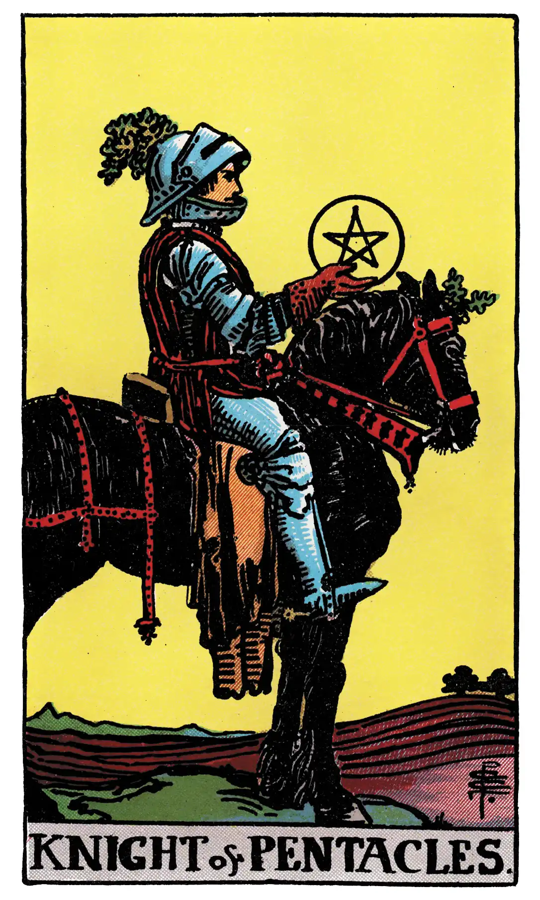

Knight of Pentacles

A.E.W.
Upright
Utility, serviceableness, interest, responsibility, rectitude – all on the normal and external plane.
Additionally
An useful man; useful discoveries.
Recurrence
2 - Intimacy.
3 - Lively debate.
4 - Serious matters.
Reversed
inertia, idleness, repose of that kind, stagnation; also placidity, discouragement, carelessness.
Additionally
A brave man out of employment.
Recurrence
2 - Susceptibility.
3 - A duel, or personal encounter.
4 - Alliance.
S.L.M.M.
Upright
A useful Man, Trustworthy, Wisdom, Economy, Order, Regulation
Reversed
A brave Man, but out of Employment, Idle, Unemployed, Negligent.
Description
He rides a slow, enduring, heavy horse, to which his own aspect corresponds. He exhibits his symbol, but does not look therein.